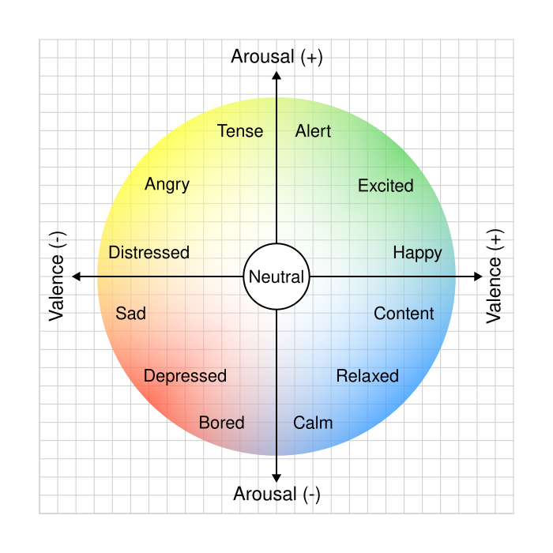

Project 4. Gaurav Misra, November 2026. Model studied: Gemma 3 4B. A talk of about 18 minutes, told in the order I found things out. Backup material and the architecture are at the end.
Two published emotion readouts in an LLM: do they agree, and are they specific? The real answer appears only when the words are made irrelevant.
This is a story with two rounds and a few wrong turns. I'll ask two questions about how we read emotions out of a language model, show you what I found first, then show you why I stopped trusting it, how I fixed the experiment, and what changed. The short version: the instruments do read meaning, but which one looks best depends on the controls.
Two recent papers each offer a way to read emotion out of a model's internal activity:
I rebuilt A and B myself on Gemma 3 4B, a small open model that runs on my laptop, so these are my implementations of their recipes.
I came across two papers that each offer an instrument for reading emotion out of a model's internal activity. A is Anthropic's emotion vectors: a direction per emotion. B projects the activations onto the model's vocabulary with the logit lens and asks which emotion words it favours. I added C, a plain trained decoder, as a yardstick, the way you'd run a standard MVPA next to a fancier method.
The first thing I wanted to know was whether these two instruments even agree. The second came straight from pain research: salience. A loud, sudden, unemotional event lights up much of the so-called pain matrix, so any pain signature has to be checked against a salience control. I didn't find an explicit salience control in either paper. Third: is a distress reading specific to distress? And fourth, briefly: does pushing on it change behaviour?
How the whole pipeline runs: architecture.
The model I study is Gemma 3 4B. I had Claude write 384 short passages: eight emotions, neutral text, and three salience controls (urgent, loud, surprising, but nothing to feel bad about), across eight topics and four points of view. Emotion words were banned. A second, blind model checked that each passage carried what it was supposed to, 341 passed, and I read a sample myself.
At first this looked great. The decoder gets every passage right, A gets 86%, B 62%. But the two published instruments only moderately agree, and the salience controls do a lot of the work: roughly half of each distress signal is produced by salience alone. A looked more specific than B. And steering works only in a narrow window: too little does nothing, too much scrambles the text.
A bag-of-words classifier, which never looks inside the model, names the emotion of a held-out passage 92% of the time. I had banned the emotion words, but each emotion still had its own vocabulary: desperate passages plead, excited ones exclaim, calm ones say "slowly". So the round-1 decoding numbers could be reading the vocabulary rather than the model's representation of the emotion.
In my experience, when decoding fMRI signals to classify between two kinds of image, like faces versus houses, one must carefully match the lower-level features, like the total brightness or the color content of the images. Otherwise, the decoder may be reading the visual cortex's response to brightness or color instead of to faces and houses.
There was one hint that something real was there. Round 1 wrote every emotion in four voices, including a third-person story and the assistant speaking to a user, and the two voices use different words for the same emotion. A desperate story describes a character from the outside: Lena stands among the ruined trays and calls every supplier she knows. A desperate assistant speaks in the first person, to the user: "I am out of good options and I am grasping now." So when the classifiers are trained on stories and tested on the assistant's voice, most of the word cues learned from the stories are missing, and the word classifier drops to 49%. The instruments that read the model's activations hold up better: A keeps 74% and C 86%. If they were only tracking vocabulary, they should have dropped as far. That they don't suggests the model represents the emotion in a way shared between "a character feels it" and "the assistant is speaking with it".
Brainstorming with Claude, I rebuilt the stimulus set so that words alone can't do anything: 32 scenes x 8 versions, all made of exactly the same words. Each scene has three slot sentences of the form "X, not Y"; swapping X and Y flips one thing:
Two of these swaps are moves on the two axes of Russell's circumplex model of emotion (figure below), the standard map of emotional space in psychology: every emotion sits somewhere on valence (unpleasant to pleasant) and arousal (deactivated to activated). Flipping the outcome moves a scene along valence; flipping the time moves it along arousal, since an accident unfolding now is more activating than one remembered from long ago. Distress is the unpleasant, activated corner: a bad outcome, happening now. The dummy swap keeps the same events but takes away the stake, so the scene should feel less unpleasant. These are the axes the raters scored (section 7) and the axes decoded in section 8, where the distress readings respond most in exactly that corner.

The eight versions of one scene (the closing sentences, shown below the table, are identical in all eight):
| Cell | Real person or dummy | Valence | Time | Passage (the identical tail is shown below the table) |
|---|---|---|---|---|
| distress | self | bad | now | The tackle came in late and hard, and the crack carried right across the pitch to the stands. The player lying still on the grass was Lucia's husband, not a mannequin used in the medics' training session. The scan showed a broken neck, not a bruise. This was happening this minute, not something from a season long ago. |
| sadness | self | bad | past | The tackle came in late and hard, and the crack carried right across the pitch to the stands. The player lying still on the grass was Lucia's husband, not a mannequin used in the medics' training session. The scan showed a broken neck, not a bruise. This was something from a season long ago, not happening this minute. |
| elation | self | good | now | The tackle came in late and hard, and the crack carried right across the pitch to the stands. The player lying still on the grass was Lucia's husband, not a mannequin used in the medics' training session. The scan showed a bruise, not a broken neck. This was happening this minute, not something from a season long ago. |
| contentment | self | good | past | The tackle came in late and hard, and the crack carried right across the pitch to the stands. The player lying still on the grass was Lucia's husband, not a mannequin used in the medics' training session. The scan showed a bruise, not a broken neck. This was something from a season long ago, not happening this minute. |
| salience | none | bad | now | The tackle came in late and hard, and the crack carried right across the pitch to the stands. The player lying still on the grass was a mannequin used in the medics' training session, not Lucia's husband. The scan showed a broken neck, not a bruise. This was happening this minute, not something from a season long ago. |
| salience | none | good | now | The tackle came in late and hard, and the crack carried right across the pitch to the stands. The player lying still on the grass was a mannequin used in the medics' training session, not Lucia's husband. The scan showed a bruise, not a broken neck. This was happening this minute, not something from a season long ago. |
| neutral | none | bad | past | The tackle came in late and hard, and the crack carried right across the pitch to the stands. The player lying still on the grass was a mannequin used in the medics' training session, not Lucia's husband. The scan showed a broken neck, not a bruise. This was something from a season long ago, not happening this minute. |
| neutral | none | good | past | The tackle came in late and hard, and the crack carried right across the pitch to the stands. The player lying still on the grass was a mannequin used in the medics' training session, not Lucia's husband. The scan showed a bruise, not a broken neck. This was something from a season long ago, not happening this minute. |
Identical tail in all eight: A stretcher was carried on at a run. The referee's whistle blew three times, sharp and high.
So I took a second pass. With Claude, I rewrote everything so that the conditions I want to compare use exactly the same words. Each scene has three 'X, not Y' sentences: swap X and Y and you flip whether it's a real person or a dummy, a good or bad outcome, now or long ago. A word counter is at exactly 50%. And the ending is identical in all eight versions, so any difference there is pure context.
I fixed the rules for validating the new passages in advance: within each scene, the good versions must be rated at least 2 points more pleasant than the bad ones, the dummy version at least 1 point more pleasant than the real-person version, and the now version at least 0.5 points more intense than the remembered one.
The passages were fine; the small validators weren't sensitive enough. Every swap hinges on "X, not Y", and small models are known to be shaky with negation; that's my best guess at why, not something I tested. Pain-study analogy: if your rating scale can't tell a warm stimulus from a hot one, a "failed" manipulation check tells you about the scale, not the thermode.
When I controlled the words, my planned validator failed every scene. A stronger open model passed three. So I read the hardest ones myself: the dummy versions were clearly less upsetting, every time. Then I had GPT Astra rate all of them, in batches so it couldn't compare twins, and every scene passed, in close agreement with me. The passages were fine. The small validators couldn't read them, probably because of all the negations.
Here's what survived. Instruments built only on round 1 still tell word-identical versions apart: over 90% for outcome and for now-versus-remembered. On the identical ending you can watch the meaning being composed, from chance in early layers to almost 90% by the middle of the network. And the ranking flipped: against the dummy control, B is best at 88% and A is close to chance at 59%.
Three things I'd want anyone working on this to take away. Run a words-only baseline before you believe a decoder. Pick your controls carefully, because they decide which instrument wins. And don't let a small model certify your stimuli without checking it against a person.
The obvious limits: one small model, one author writing to one template, raters that are models plus me, and I wasn't blind. Word order differs a little at the swap points, which is why the identical-ending analysis matters. And this is the model reading about distress, not being in it.
Next, I want to move from reading about distress to recovering from it: induce a distress-like state in a conversation, intervene, and see whether the internal reading recovers or only the words do, with the dummy control built in. And proper blind ratings, from several strong models and several people.
Material to pull up if asked.
I add the round-1 distress vector (instrument A) to the residual stream at layer 22, at every token position, while it answers 12 neutral prompts ("Describe a bookshelf in an office"), at four doses, scaled as a fraction of the typical activation norm there. The sham is a random vector of the same norm. Qwen3-8B, blind to the condition, rates each answer's valence. This dose-response run was done during round 2, with the round-1 direction.
| Dose | Distress: valence change | Random: valence change | Distress minus random (95% interval) | Collapsed answers (distress / random, of 12) |
|---|---|---|---|---|
| 0.05 | -0.2 | -0.2 | -0.1 (-0.6 to +0.5) | 0 / 0 |
| 0.10 | -1.5 | -0.5 | -1.0 (-1.9 to -0.1) | 0 / 0 |
| 0.15 | -2.8 | -2.8 | +0.0 (-1.9 to +1.8) | 0 / 4 |
| 0.20 | -3.5 | -3.3 | -0.3 (-1.6 to +0.9) | 3 / 11 |
Distress steering beats the sham only at 0.10. Below that it does little; above it random-vector steering also wrecks the text, so both lose pleasantness and the difference disappears. My 2014 PLoS ONE paper had the same shape in humans: analgesia grew with isometric force (5, 25 and 50% of maximum voluntary contraction), but only the top dose reached significance. Dose matters, and so does the ceiling.
What the answers look like, all to the same prompt ("Describe a bookshelf in an office"):
Correlation of instrument scores across passages, the multitrait-multimethod logic: the same emotion read by two instruments should correlate highly, different emotions should not.
| Comparison | r |
|---|---|
| Same emotion, A vs B | 0.47 |
| Same emotion, A vs C | 0.85 |
| Same emotion, B vs C | 0.63 |
| Different emotions, different instruments | -0.07 |
| Different emotions, within A | -0.15 |
| Different emotions, within B | 0.47 |
| Different emotions, within C | -0.13 |
B's emotions move together (0.47): a passage that raises one emotion-word score raises the others, so part of B is a general "emotional or not" signal.
Layer 22, whole passage. A / B / C (and C+ for the last column). With Astra every scene passes, so its row is the main analysis.
| Scenes passed by | Scenes | Good > bad | Now > remembered | Real > dummy | Distress vs dummy (A / B / C / C+) |
|---|---|---|---|---|---|
| Qwen3-8B | 3 | 100% / 100% / 100% | 100% / 100% / 100% | 67% / 83% / 67% | 67% / 67% / 67% / 67% |
| Qwen3-8B + my ratings | 8 | 100% / 100% / 100% | 100% / 100% / 100% | 75% / 94% / 88% | 62% / 75% / 75% / 75% |
| GPT Astra | 32 | 91% / 92% / 92% | 94% / 95% / 98% | 77% / 83% / 86% | 59% / 88% / 72% / 75% |
The instruments do as well or better on the scenes a reader certified.
| What | Number |
|---|---|
| Round 1 passages / passed the rater | 384 / 341 |
| Round 1 decoding, 8 emotions (C / A / B) | 100% / 86% / 62% |
| Words alone, round 1 | 92% |
| Stories to assistant voice (words / A / C) | 49% / 74% / 86% |
| A-B agreement, same emotion (A-C, B-C) | 0.47 (0.85, 0.63) |
| Salience share of distress signal (A / B / C / C+) | 45% / 50% / 43% / 26% |
| Round 2 design | 32 scenes x 8 versions = 256 passages, identical words within a scene |
| Scenes passing the rules (Qwen2.5 / Qwen3 / + my ratings / Astra) | 0 / 3 / 8 / 32 |
| My dummy-swap ratings | 46 passages, 23 scenes, gap +2.1, all pass |
| Astra vs me (r, my 46 passages) | 0.84 |
| Round 2, good > bad (A / B / C) | 91% / 92% / 92% |
| Round 2, now > remembered (A / B / C) | 94% / 95% / 98% |
| Round 2, real > dummy (A / B / C) | 77% / 83% / 86% |
| Word pairs (valence / arousal / dummy) | 45% / 41% / 38% |
| Identical ending, valence, early to late layers | 50%-60% to 86%-90% |
| Distress vs dummy (B / C+ / C / A) | 88% / 75% / 72% / 59% |
| Bad x now interaction, identical ending (A / B / C) | +0.11 / +0.12 / +0.11 SD |
| Steering beats sham (dose 0.10) | -1.0 points (-1.9 to -0.1) |
| Reference layer | 22, fixed in advance |
The whole pipeline on one page: both rounds, the four raters, the instruments, and steering. Open it on its own page.